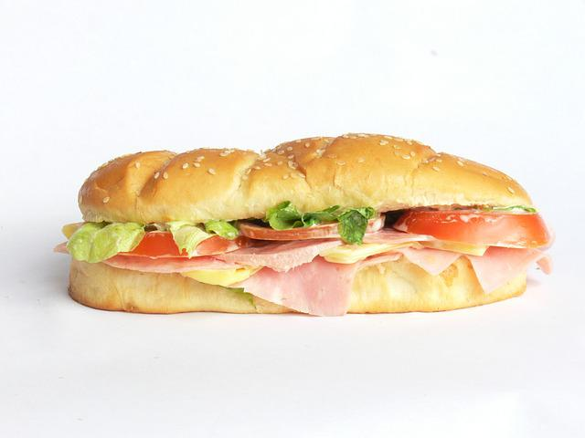

Easy Hoagie

When you are starving, and need something you
CAN'T mess up.
Ingredients
- Hoagie roll of your choice
- Condiment of your choice (best choice is Mayo!)
- Oil of your choice (Extra virgin olive oil is best)
- (optional) butter
- Protein of your choice (roast beef for the win)
- Veggie 1/3 of your choice (lettuce anyone?)
- Veggie 2/3 of your choice (tomato)
- Veggie 3/3 of your choice (onion)
- Seasoning(s) of your choice (good 'ol oregano)
Directions
- Spread butter on one side of each slice of bread.
Sprinkle garlic powder (optional) on the buttered side.
- With buttered side down place 1-2 slices of cheese on "un-buttered" side.
- Spray olive oil in skillet pan over medium heat.
- Place both slices of bread in skillet pan, buttered side down.
- Cook until cheese is starting to melt, and bread is golden.
- Flip one piece of bread on top of the other, and continue
cooking until the cheese on both slices are melted together.
- Take out of skillet pan, and let cool.
- Enjoy!
Homepage